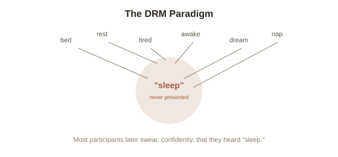

Chapter 4: Source Monitoring and the DRM Paradigm
Chapter 3 described the damage suggestive techniques could do, but not the precise mechanism inside memory that makes a suggested detail feel exactly like a genuinely perceived one. That mechanism has a name, a well-developed theory behind it, and a remarkably clean laboratory demonstration that can reliably produce a specific false memory in the majority of ordinary participants, in about five minutes, with no trauma or suggestion involved at all.
Source monitoring: the tag that tells you where a memory came from
Psychologist Marcia Johnson's source monitoring framework proposes that every memory carries not just content, but an attached judgment about where that content came from — did you actually see it, did someone tell you about it, did you imagine or infer it, did you read about it somewhere. This "source tag" isn't a separate, foolproof stamp attached at the moment of encoding; it's a judgment the brain reconstructs at the moment of retrieval, based on qualities like how vivid or detailed the memory feels, and it can misfire. A source monitoring error (correctly recalling a piece of information or an image, but incorrectly attributing where it came from — for instance, remembering something you only imagined as something you actually witnessed) is the precise mechanism underneath most false memories: the content itself isn't necessarily invented from nothing, but its origin gets misfiled, and once misfiled, it's retrieved and experienced exactly like a genuine perceptual memory, with no accompanying sense that anything is off.
The DRM paradigm: manufacturing a false memory on command
Psychologists James Deese, and later Henry Roediger and Kathleen McDermott, developed what's now called the DRM paradigm (after their initials), a remarkably simple and remarkably reliable procedure for producing a false memory under fully controlled conditions. Participants hear a list of related words — for a "sleep" list, this might include bed, rest, awake, tired, dream, nap, and a dozen more — carefully chosen so that they all strongly relate to one specific word that is never actually presented: "sleep" itself. When later asked to recall the list, a large majority of participants confidently recall hearing the word "sleep," often rating their confidence in having heard it as high as their confidence in words that were genuinely on the list. Nothing about the study involves trauma, suggestion from an authority figure, or repeated interviews — a single fifteen-word list, heard once, reliably produces a specific, confidently held false memory in the laboratory, demonstrating that ordinary associative memory processes alone, with no suggestive pressure at all, are enough to generate this kind of error.

Cryptomnesia: forgetting that a source tag existed at all
A related, specific failure is cryptomnesia (unconsciously recalling something previously encountered — a phrase, a melody, an idea — as an original thought or creation, with no memory of the original source at all). This has produced real, documented cases of unintentional plagiarism among writers and musicians who genuinely, sincerely believed they had created something original, only to later discover — sometimes to their own shock — that it closely matched something they had been exposed to years earlier and had no conscious memory of encountering. This isn't dishonesty; it's a source-monitoring failure at the more extreme end: the content survived in memory, but the entire "where this came from" tag was lost, and a new, false tag (my own original idea) filled the resulting gap without anyone consciously constructing it.
Why this reframes the whole topic once more
Source monitoring and the DRM paradigm complete the mechanistic picture this topic has been building since Chapter 1: memory isn't a single, unified faculty that either works or doesn't — it's an assembly process with several separable components (Chapter 1's reconsolidation, this chapter's source attribution), any one of which can misfire independently while the rest function normally, producing a memory that feels completely coherent and confident from the inside, with no internal signal that anything has gone wrong at the seams. Understanding memory's unreliability accurately isn't really about learning that memory sometimes fails — it's about recognizing these specific, well-mapped points of failure, which turn out to be a small, identifiable set of mechanisms rather than a vague, catch-all unreliability.
Try this
Ideas for noticing or testing this in your own life.
- Try building your own DRM-style list for a friend — a dozen words related to a common concept, deliberately leaving that word out — and see whether they later recall "hearing" it.
- Notice a moment when you're not sure if you actually did something or just thought about doing it vividly (did I lock the door, or did I just picture myself locking it?) — a small, everyday brush with source monitoring in action.
Worth pulling on?
A few loose threads from this chapter — if any of these genuinely grab you, that's a good sign of where to go next.
- Understanding exactly how and where memory fails opens up the more useful, practical question of what can actually be done to work around those specific failure points. → The subject of the final chapter in this topic: what actually improves memory accuracy, in the courtroom and elsewhere.
- Source monitoring errors are a specific case of a much broader pattern: automatic, below-conscious processes generating a confident, coherent-feeling output with no internal flag that something's actually wrong. → Already in the library: Philosophy of Mind's chapter on split-brain confabulation covers a striking, related case of confident explanation with no accurate access to the real cause.